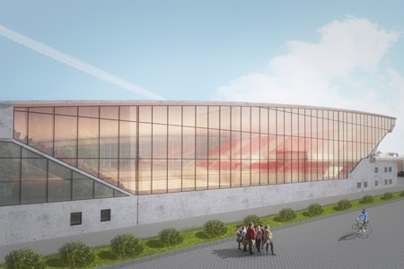
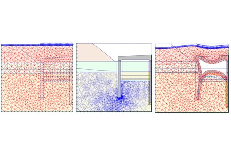
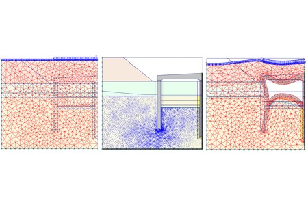
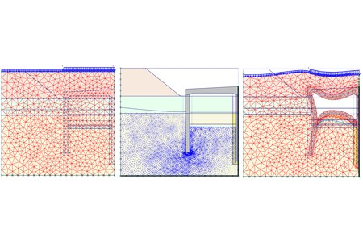
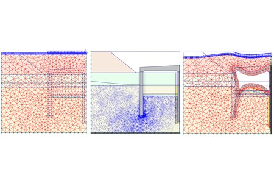

Projekty


 


Jestem inżynierem budownictwa zajmującym się projektowaniem konstrukcji inżynierskich i kubaturowych. Od najmłodszych lat wykazywałem zainteresowanie budownictwem, które rozwinąłem podczas studiów. Ukończyłem Politechnikę Gdańską w 2015 r. z wyróżnieniem w gronie 5% najlepszych absolwentów. Dyplomowałem się na kierunku budownictwo z specjalnością Konstrukcje Betonowe. Otrzymałem najwyższą ocenę końcową na dyplomie, uzyskując tytuł magistra inżyniera. Zawodowo zajmowałem się zarówno pracą przy realizacji obiektów budowalnych jak i projektowaniem konstrukcyjnym. W swojej pracy wykazuję się przede wszystkim sumiennością, dbałością o szczegóły i odpowiedzialnością.
Moja firma wspiera biura konstrukcyjne przy realizacji projektów branży budowlanej. Oferuję współpracę na zasadzie freelancingu, w formie pracy zdalnej. Świadczę usługi w zakresie sporządzania dokumentacji technicznej, w tym rysunków technicznych, wykonywanie obliczeń statyczno-wytrzymałościowych konstrukcji oraz modeli numerycznych w środowisku MES. Oferuję sporządzanie dokumentacji technicznej zarówno w języku polskim i angielskim. Proces projektowania wykonuję na własnym licencjonowanym oprogramowaniu komputerowym. Część rysunkowa projektu jest wykonywana w środowisku CAD 2D.
